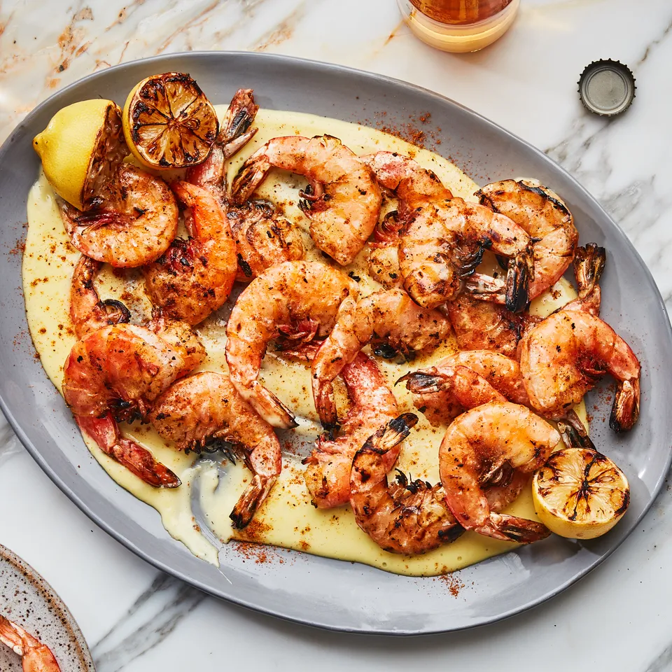

Grilled Old Bay Shrimp

Description
Seasoned with Old Bay, a little garlic, and some charred lemons, these grilled shrimp channel classic East Coast fish shack vibes. We highly encourage you eat them with the shells on—the crunchy texture and smoky flavor they pick up from the grill are all part of the pleasure. But if you’d rather not, go ahead and peel ’em before serving. Also, they’re just as delicious chilled as they are hot off the grill, so enjoy them whichever way you like.
Ingredients
- ½ cup plus 1 Tbsp. canola oil, plus more for grill
- 1 lb. shell-on shrimp (16–20 per lb.)
- 3 small garlic cloves, finely grated, divided
- 1½ tsp. Old Bay seasoning, plus more for serving
- ¾ tsp. kosher salt, divided, plus more
- 1 large egg yolk
- 2 lemons, divided
Preparation
- Prepare a grill for medium-high heat. Lightly oil grate. Using kitchen shears, snip down back of each shrimp shell along the vein, stopping at the tails. You may end up cutting a little but of the flesh, but the aim here is to make it easy to peel the shell later (if you choose!) without compromising the shrimp’s tenderness. The shells are a protective barrier, so keep them on when grilling.
- Transfer shrimp to a medium bowl. Add 1 Tbsp. oil, two-thirds of garlic, 1½ tsp. Old Bay, and ¾ tsp. salt and toss to combine. Let sit 10–15 minutes while you prepare the aioli.
- Whisk egg yolk and remaining garlic in a medium bowl. Finely grate 1 tsp. lemon zest into egg mixture. Whisking constantly, gradually stream in remaining ½ cup oil until thick and pale yellow. Stir in juice of one lemon half. Season well with salt—it should taste really vibrant.
- Cut remaining lemon in half. Grill shrimp and 3 lemon halves (cut sides down) until shells are golden brown and charred in some spots and flesh is opaque and cut sides of lemons are deeply caramelized, 1–2 minutes.
- Spread aioli on a platter. Arrange shrimp and charred lemons over. Season lightly with more Old Bay.